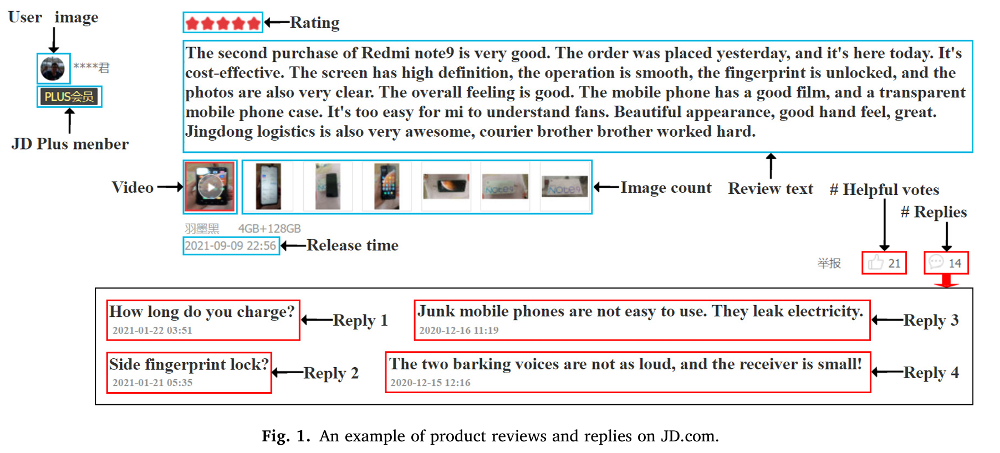
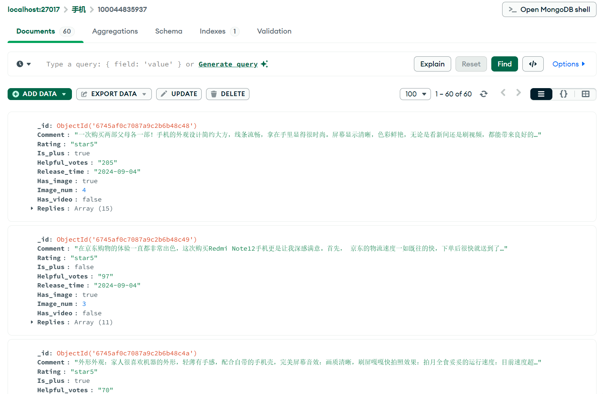
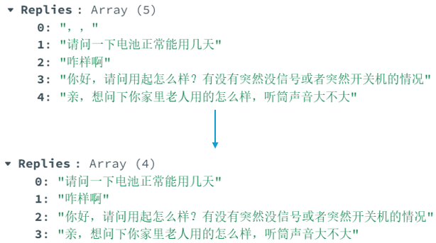
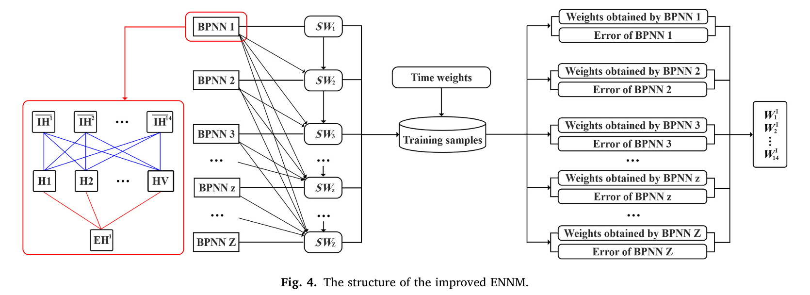
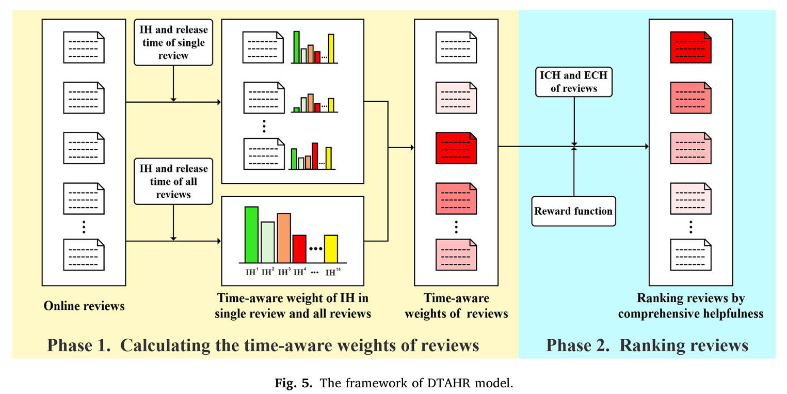

Before reproducing the paper, the first step is to sort out the overall reproduction idea. After thoroughly reading the paper, it is easy to find that the first step should be to collect data as shown in the following figure. 
Therefore, I wrote a Python crawler to crawl a certain amount of data from JD.com according to the examples given in the paper and store it in the MongoDB database for subsequent analysis. 
After completing data collection, the second step is the preprocessing of comments and replies as well as LDA and sentiment analysis. Because the data volume is relatively large, I wrote a JavaScript script with faster I/O speed for batch processing of the data exported from the database and processed the data more quickly by calling the data analysis function interface in the Python script. 
After the preprocessing is completed, we can start calculating IH and EH. Two Python scripts are written to calculate the two indicators respectively.
After calculating IH and EH, the most important thing is to obtain the weight of IH. Then, combined with the weight obtained by the time-weighted standard deviation of EH, ICH and ECH are calculated. Here, I follow the method in the paper and use ENNM for calculation.  However, due to the Python GIL, this part of the work progresses extremely slowly.
Sixth step: Construct the DTAHR model to better use the ICH and ECH indicators to evaluate the usefulness of comments. 
Seventh step: In order to verify the effectiveness of the DTAHR model, two simulation experiments are designed and verified from two aspects respectively.
In the last step, after verifying the effectiveness of the indicators and models, through visualization and data integration, all comments are ranked according to comment usefulness and displayed.